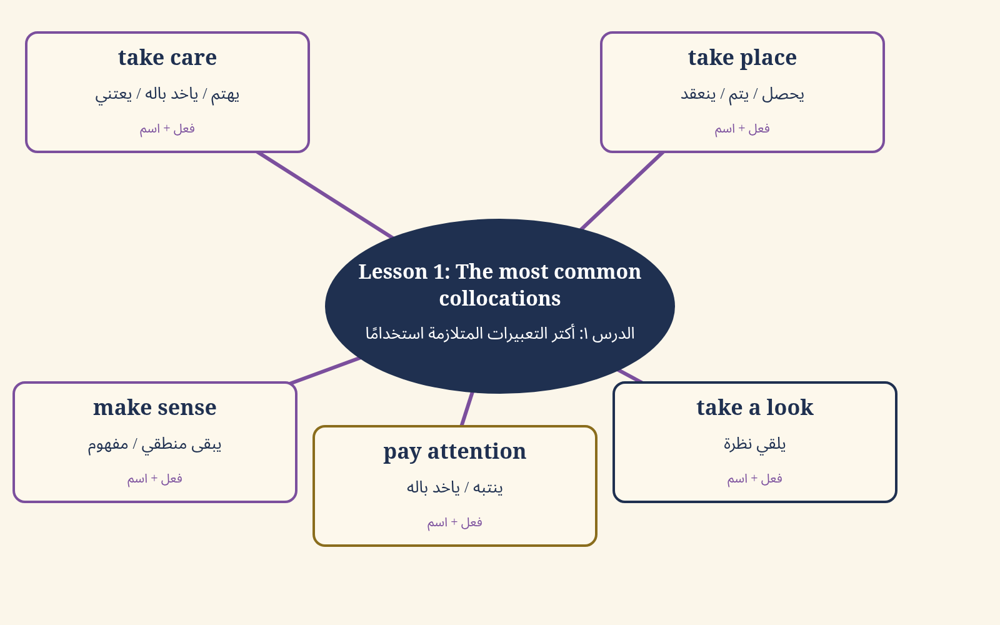

آداب الإنجليزية
: قواعد وجرامر وشعر وأساطير
⭐
0
🔥
استمر!
🔗
الكولوكيشنز 1: take care، take place، make sense، pay attention، take a look
5 كولوكيشنز
📄 حمّل PDF الدرس
📝 ملخص الدرس (عربي) PDF
📝 Lesson Summary (English) PDF
🧠 الخريطة الذهنية PDF
🧠 شوف الخريطة الذهنية للدرس

كل دروس الكورس
الدرس اللي بعده
←